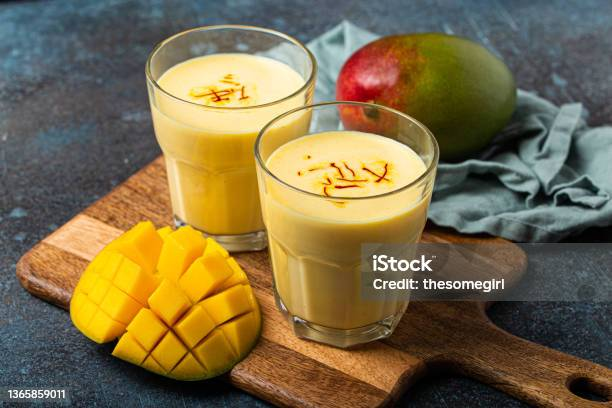

Mango Lassi II

Description
An Indian yogurt drink - smooth, creamy, and absolutely heavenly!
Ingredients
- 2 mangos - peeled, seeded and diced
- 2 cups plain yogurt
- 1/2 cup white sugar
- 1 cup ice
Steps
- In a blender, combine mangos, yogurt, sugar and ice. Blend until smooth. Pour into glasses and serve.